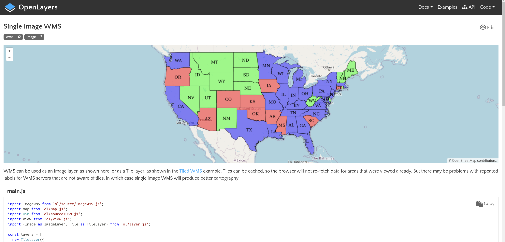

flowchart LR
dev("Développement") --> prod("Production")
prod --> dev
Développer avec NodeJS et OpenLayers
Cycle de développement, structure de l’application
Marie Gradeler
2025-12-02
Sommaire
Le cycle de développement (web)
Structure de mon application OpenLayers
Se familiariser avec le code de l’application
Conseils pour coder
(Une) Méthode pour coder une application OpenLayers
On ajoute notre première couche ensemble
Le cycle du développement web
La version simpliste
Le développement d’une application est un cycle. Si on le simplifie, on a une boucle entre le développement lui-même et la mise en production de l’application.
Développement : on ajoute de nouveaux éléments à l’application. Le développement s’effectue en local (sur mon ordinateur), grâce à un serveur de développement (lancé avec
npm startdans notre cas).Production : on met en production ces nouveaux éléments. On build l’application avec
npm run buildet on met le résultat, le contenu du dossierdist/, dans notre serveur web. Dans notre cas, le Docker Compose s’occupe de connecterdist/au serveur Caddy.
Le cycle du développement web
Le quality check pour mettre une nouvelle version en production : les tests
Dans la réalité, et vous l’avez déjà certainement appliqué sans vous en rendre compte, il faut vérifier que l’application est prête à être mise en production : en gros, que nos nouveaux éléments fonctionnent bien et qu’on ne rajoute pas de nouveaux bugs.
flowchart LR
dev("Développement") --> tests
tests("Tests") --> dev
tests --> prod("Production")
prod --> dev
Développement : on ajoute de nouveaux éléments à l’application.
Tests : on teste les nouvelles fonctionnalités. Si on trouve des bugs ou des choses à améliorer, on retourne à la phase de développement.
Production : si notre application a passé tous les tests, alors elle est prête à accueillir définitivement les nouveaux éléments qu’on a développés.
Le cycle du développement web
Intégration de Git
Comme vous savez utiliser Git pour versionner votre code, on peut complexifier ce schéma en intégrant la création de nouvelle branche, les commits et les fusions de branches (merge).
flowchart LR
start{"Start"} --> branch{{"git branch"}}
branch --> dev("Développement")
dev --> build{{"npm run build"}}
build --> tests("Tests")
tests --> dev
build --> commit{{"git commit"}}
commit --> merge{{"git merge"}}
merge --> prod("Production")
prod --> stop{"End"}
stop --> start
Je crée une nouvelle branche (
git branch) pour ma nouvelle feature / ma correction de bug, par exemplefond-carte-stamen.Quand je juge que le développement est terminé, je build mon application (
npm run build) pour pouvoir tester la nouvelle version.Si je trouve des bugs, je continue le développement.
Si mon build est prêt, je peux commit mes changements (
git commit) et j’ajoute un message qui explique ce que fait le nouveau code que je viens commit. Si votre développement vous fait ajouter beaucoup de code pour une seule feature, vous pouvez (devez) faire plusieurs commits. Vous pouvez les voir comme des checkpoints dans votre développement — si vous cassez quelque chose, vous pouvez revenir au dernier commit, ou celui d’avant, etc.
Le cycle du développement web
Intégration de Git
flowchart LR
start{"Start"} --> branch{{"git branch"}}
branch --> dev("Développement")
dev --> build{{"npm run build"}}
build --> tests("Tests")
tests --> dev
build --> commit{{"git commit"}}
commit --> merge{{"git merge"}}
merge --> prod("Production")
prod --> stop{"End"}
stop --> start
Ensuite, je dois merge le code de ma branche avec la branche prinicipale de mon code (généralement main) avec
git merge.La dernière étape est de mettre mon application en production. C’est très complexe et ce ne sera pas à vous de le faire. Le Docker Compose s’en charge pour vous.
Se familiariser avec le code de l’application
Node JS crée beaucoup d’éléments mais voici ceux qu’on utilisera :
index.htmlstyle.cssmain.js
Deux autres explications à titre d’information :
node_modules/contient notamment le code des librairies installées, c’est ici que vit le code source d’OpenLayersdist/contient l’output du build du site, c’est les fichiers qui sont prêts à être servis par le serveur (pour nous, Caddy) pour mettre notre site en production
Se familiariser avec le code de l’application
index.html
<!DOCTYPE html>
<html lang="en">
<head>
<meta charset="UTF-8" />
<link rel="icon" type="image/x-icon" href="https://openlayers.org/favicon.ico" />
<meta name="viewport" content="width=device-width, initial-scale=1.0" />
<title>Using OpenLayers with Vite</title>
</head>
<body>
<div id="map"></div>
<script type="module" src="./main.js"></script>
</body>
</html>Se familiariser avec le code de l’application
index.html
Une référence pratique pour les balises html : W3schools.com
Se familiariser avec le code de l’application
style.css
Se familiariser avec le code de l’application
style.css
Des références pratiques pour écrire du CSS :
cssreference.io pour la plupart des propriétés CSS
W3schools.com pour les sélécteurs
d’excellents guides sur css-tricks.com pour utiliser grid ou flexbox
Se familiariser avec le code de l’application
main.js
Conseils pour coder
Problématiser
La première chose à faire est de découper le problème / la consigne en plus petits éléments à résoudre.
Créez une carte grâce à OpenLayers à l’échelle globale. Vous pouvez utiliser le fond de carte que vous voulez SAUF celui par défaut (si vous êtes en manque d’inspiration, je vous conseille un des fonds de Stamen Maps). Ensuite, en partant du jeu de données land_matrix_mines qu’on a utilisé la dernière fois, affichez la couche de votre choix sur la carte. Si vous avez besoin de la couche au format GeoJSON vous pouvez l’exporter comme telle depuis QGIS (pour rappel, on travaille en WGS84, il serait avisé d’exporter la couche dans ce système de projection). Enfin, si vous avez le temps, ajoutez un titre à votre carte.
Créer une application OpenLayers (aucune méthode n’est recommandée, j’ai le choix parmi les options disponibles).
Changer le fond de carte (fonds Stamen recommandés)
Chercher comment importer un jeu de données au format vecteur dans une application OpenLayers (la consigne parle de GeoJSON)
Exporter une couche de land_matrix_mines en GeoJSON (WGS 84)
Importer la donnée dans mon application
Afficher la donnée sur la carte OpenLayers
Conseils pour coder
Ressources : la documentation
D’abord, la documentation. C’est la bible d’OpenLayers et vous allez devoir apprendre à la comprendre, au moins en partie, ou vous allez avoir beaucoup de mal à comprendre ce que vous faites quand vous codez. Elle peut être trouvée à cette addresse : https://openlayers.org/en/latest/apidoc/
Conseils pour coder
Ressources : la documentation
Exemple d’utilisation de la documentation pour l’objet Map qui est créé dans main.js :
Tapez “Map” et cliquez sur le premier résultat (lien ici). On voit en haut de la page :
Comment importer cet objet
MapUne description de ce qu’est cet objet
MapUn exemple (“snippet”, petit morceau de code) qui montre comment utiliser
Map
Quand on continue à défiler vers le bas, on voit plusieurs autres sections :
La définition de la fonction pour créer l’objet
Mapet les options qu’il prend (new Map(options))Les évènements qui peuvent être déclenchés (“fired”) par notre objet
Mapdans la sectionFires:Les
Méthodesde l’objetMap, donc les fonctions qui peuvent être déclenchées avec cet objet Map pour généralement le lire ou le modifier
Conseils pour coder
La documentation
classDiagram
class Map{
controls
pixelRatio
interactions
keyboardEventTarget
layers
maxTilesLoading
moveTolerance
overlays
target
view
+methods…()
}
OK c’est un peu compliqué. Pour simplifier, on va prendre les éléments qui nous intéressent le plus.
Conseils pour coder
La documentation
classDiagram
class Map{
target
layers
view
+addLayer()
+getlayers()
+getView()
}
Classe : Map
Attributs :
target= l’id de ma<div>qui va contenir ma cartelayers= les couches créées avec OpenLayers qui doivent être ajoutées à ma carteview= les paramètres de la vue (centre, niveau de zoom) de ma carte lorsqu’elle est initialisée
Méthodes :
addLayer()= ajouter une couche créée avec OpenLayers à ma cartegetLayers()= récupérer les couches qui sont attachées à ma cartegetView()= récupérer les paramètres de la vue actuelle (centre, niveau de zoom)
Conseils pour coder
La documentation
Pour créer une carte sous OpenLayers, le point d’entrée principal est la galerie d’exemples. Je vous conseille vivement de toujours commencer par là avant d’aller voir d’autres ressources comme StackOverflow, etc. comme ce sont les exemples officiels qui sont maintenus à jour et respectent les bonnes pratiques d’utilisation du code OpenLayers.
Par exemple, si vous souhaitez ajouter un flux WMS à votre carte, basez-vous sur le code de l’exemple Single Image WMS.
Conseils pour coder
Les extensions de l’IDE
Les extensions présentes dans votre IDE (comme VSCode) vous donnent des indications sur les fonctions que vous utilisez.
VSCode devrait vous proposer la liste des méthodes de console. Si vous commencez à taper la lettre l, il devrait vous proposer log en tête de liste. Il vous suffit d’appuyer sur “Entrée” pour valider l’autocomplétion.
Ouvrez les parenthèses et laissez votre curseur à l’intérieur. VSCode devrait vous afficher les arguments attendus (message), leur type (any), s’il y a des arguments optionnels possibles (oui)… et quelques exemples.
Lorsque vous utilisez de nouvelles fonctions, notamment en utilisant OpenLayers, apprenez à utiliser les indications de votre IDE. Cela vous évitera quelques bugs et vous aidera à comprendre ce que vous faites.
Conseils pour coder
La console de développement
Les outils de développeurs, et particulièrement la console, sont indispensables pour développer une application web. Pour y accéder, ouvrez votre application dans votre navigateur et appuyez sur la touche F12.
La console vous montre les messages d’erreur et vous indique à quel ligne l’erreur a lieu. Apprenez à l’utiliser pour corriger plus facilement vos bugs.
Conseils pour coder
Maintenant qu’on a vu les ressources officielles d’OpenLayers et comment utiliser notre IDE, on va regarder ce qu’il y a d’autre.
Conseils pour coder
Les tutoriels pour bien démarrer
Ça fonctionne peut-être moins bien en salle de classe, mais les tutoriels YouTube restent un très bon moyen d’apprendre à utiliser une librairie. Pensez à vérifier que la vidéo est assez récente (regardez la date de publication).
Vous pouvez mettre pause, afficher les sous-titres et les traduire en direct… ça reste une excellente ressource, même s’il faut toujours la regarder d’un œil critique (comme tout, en fait). C’est toujours bien de regarder au moins deux vidéos sur le même sujet pour voir les différentes approches des personnes.
Vous pouvez aussi trouver des tutoriels au format écrit comme des articles de blog — blogs privés, Medium, etc.
Comme pour les vidéos, regardez la date de publication et essayez de choisir du contenu récent. Il serait dommage de suivre un tutoriel datant d’OpenLayers 5 en était sous OpenLayers 7+.
Conseils pour coder
Les forums pour résoudre ses problèmes
Les sources de discussion les plus connues pour parler de code sont StackOverflow et StackExchange.
Les Stack sont des forums spécialisés où les utilisateurs posent des questions, généralement liées à l’utilisation d’un logiciel, au développement en se basant sur une certaine librairie… contrairement aux issues qui font remonter des bugs, les questions sur StackOverflow proviennent souvent d’utilisateurs qui ont besoin d’aide.
Pas la peine de taper votre recherche dans StackOverflow ou StackExchange. Si vous avez un bug, faites une recherche Google… ils sont généralement dans les premiers résultats.
Essayez avec : “openlayers layer not showing”
Il existe d’autres ressources pour communiquer avec d’autres utilisateurs et poser ses questions. Certains utilisent Reddit, d’autres des forums spécialisés pour leur application, des serveurs Discord…
Conseils pour coder
L’IA générative pour m’aider un peu partout
Normalement, on en a déjà parlé au cours précédent. L’IA générative peut intervenir à chaque étape du processus, mais soyez efficaces et responsables.
Référez-vous au cours sur le sujet pour savoir comment optimiser vos prompts.
Plus loin dans ce cours-ci, une diapo reprend quelques conseils pour intégrer l’IA dans la méthode de développement que je vous propose.
Conseils pour coder
Mémo
Utilisez des
console.log()à outrance pour vérifier qu’une fonction a bien été appelée, qu’une variable a bien été lue, etc.Copiez le code des exemples OpenLayers et essayez de le changer petit à petit pour l’adapter à votre code.
Quand vous voulez ajouter de nouveaux éléments, allez-y petit à petit et vérifiez à chaque étape que tout fonctionne, ça permettra plus facilement de retrouver les bugs.
Une des premières choses à vérifier quand le code ne fonctionne pas est le nom des variables. Parfois on oublie un “s”, parfois on a ajouté une majuscule…
COMMENTEZ VOTRE CODE ! Non seulement ce sera pris en compte dans l’évaluation, mais surtout vous allez galérer à comprendre votre code en revenant dessus dans quelques mois et/ou les personnes avec qui vous allez travailler vont aussi mettre du temps à vous comprendre.
(Une) Méthode pour aborder les problèmes en développement web
Méthode proposée
Découper le problème (la consigne, la demande du client…) en plusieurs petites étapes.
Chercher des tutoriels, des exemples pour chaque étape pour savoir où et comment commencer.
Commencer à coder en se basant sur les tutoriels / exemples. Partir de quelque chose qui fonctionne et adapter le code petit à petit à notre problème. Quand on a du mal à comprendre ce qu’on écrit, utiliser d’abord l’IDE et la documentation.
Aux premiers problèmes, bugs, etc. chercher la source avec la console de développement en abusant des
console.log().Une fois la source du bug identifiée, utiliser la documentation, les forums, les tutoriels, etc. pour corriger le bug.
Quand votre nouvelle feature fonctionne (par exemple une couche qui s’affiche bien), recommencer la boucle pour la feature suivante (problématiser, coder à partir d’exemples que vous adaptez petit-à-petit, corrigez les bugs, etc.).
(Une) Méthode pour aborder les problèmes en développement web
Et l’IA générative, elle intervient quand ?
L’IA générative peut intervenir à chaque étape du processus, mais soyez efficaces et responsables.
Vous pourriez lui demander de découper votre problème en différentes étapes, mais demandez-vous si vous en avez réellement besoin ou si la consigne vous semble déjà claire.
Vous pourriez lui demander de générer du code “de départ”, mais attention à lui donner un prompt précis (librairies utilisées et versions, environnement de développement… soyez précis). Attention, c’est souvent quand vous êtes vagues et demandez une grosse tâche “d’un coup” que l’IA va se mettre à halluciner.
L’IA est en revanche un bon compagnon pour chercher des solutions aux bugs… mais comme elle hallucine souvent, commencez par des recherches Google : parfois c’est un bug courant et le premier sujet sur StackOverflow répond largement à votre besoin… sans inventer de fonctions qui n’existent pas. Regardez ensuite toujours la documentation des fonctions qui posent problème. Si vous êtes toujours coincés après avoir fait ça (qui ne demande que quelques minutes), l’IA générative pourrait vous débloquer.
On ajoute notre première couche ensemble
Maintenant, on va ajouter notre première couche WMS ensemble.
Ajoutez une couche de données à votre application à partir d’un flux WMS.
On ajoute notre première couche ensemble
Problématisation
Première étape : on problématise.
Ajoutez une couche de données à votre application OpenLayers à partir d’un flux WMS.
Il me faut une application OpenLayers => check
Comment est-ce que OpenLayers peut lire les flux WMS ? Est-ce que la librairie est équipée pour ça ? => documentation, exemples officiels, recherches Google
Trouver et importer un flux WMS
L’afficher sur la carte
On ajoute notre première couche ensemble
À la recherche d’un exemple
- Depuis le site officiel d’OpenLayers, accédez à la référence de l’API (et choisissez la dernière version). Essayez de voir si vous trouvez quelque chose en rapport avec des flux “WMS”.
- Super, on dirait qu’OpenLayers est prévu pour pouvoir lire des flux WMS ! Pour voir comment ça fonctionne, plutôt que de s’arracher les cheveux sur la documentation de l’API, allez dans “Exemples” et tapez “WMS” dans la barre de recherche.
- Exercice : on sait qu’on a à disposition un serveur GeoServer. Parmi les exemples OpenLayers, cherchez-en un qui lit de la donnée depuis un GeoServer.
- Quand on a trouvé notre exemple, on peut passer à la suite.
On ajoute notre première couche ensemble
Préparer mon environnement de développement
Ouvrez votre projet dans VSCode (ou votre IDE préféré). Si votre serveur de développement tourne encore, vous pouvez l’arrêter pour le moment (ctrl + C).
Comme on va développer un nouvel élément pour notre application, on va créer une nouvelle branche sur Git.
Regardez si vous avez des changements sur votre branche. Si c’est le cas, on va les stage (ajouter aux modifications) puis les commit (valider les modifications) et enfin les push (pour mettre la branche à jour sur notre GitHub.
Ensuite, on va créer une nouvelle branche. On lui donne un nom clair, comme
couche-wms-exemple… quelque chose qui permet de rapidement comprendre ce que vous ajoutez à votre application.On n’oublie pas de se déplacer sur cette nouvelle branche ! Quand vous codez, vérifiez que vous n’êtes pas sur “main” (ou “master”).
On ajoute notre première couche ensemble
Maintenant qu’on est prêts, on peut reprendre notre exemple et commencer à coder. On utilisera donc l’exemple “Single image WMS” d’OpenLayers qui nous permet d’ajouter une couche WMS depuis un GeoServer à notre application.
Gardez cet exemple ouvert dans votre nagivateur, on va le détailler ensemble.
On ajoute notre première couche ensemble
🤔 Qu’est-ce qui est différent dans index.html ?
- le style n’est pas dans
style.cssmais dans une balise de<style>. Nous on a déjà un fichier de style qui fonctionne très bien et la carte en plein écran nous plait, on ne change rien.
- la balise
<div id="map">a aussi une classe de styleclass = "map". Cela permet d’appliquer le même style à toutes les cartes avec la classemap. Nous on a une seule carte dans notre application, donc on s’en moque.
En gros, on n’a rien à modifier dans index.html ni dans le fichier de style style.css. On peut passer au gros morceau : le fichier de script main.js.
On ajoute notre première couche ensemble
🤔 Qu’est-ce qui est différent dans main.js ?
👆 Mon conseil : au début, ignorez toute la section import qui peut sembler un peu floue et concentrer vous sur les variables qui sont définies dans le code, puis sur les objets OpenLayers.
Notre code :
Le code de l’exemple :
import ImageWMS from 'ol/source/ImageWMS.js';
import Map from 'ol/Map.js';
import OSM from 'ol/source/OSM.js';
import View from 'ol/View.js';
import {Image as ImageLayer, Tile as TileLayer} from 'ol/layer.js';
const layers = [
new TileLayer({
source: new OSM(),
}),
new ImageLayer({
extent: [-13884991, 2870341, -7455066, 6338219],
source: new ImageWMS({
url: 'https://ahocevar.com/geoserver/wms',
params: {'LAYERS': 'topp:states'},
ratio: 1,
serverType: 'geoserver',
}),
}),
];
const map = new Map({
layers: layers,
target: 'map',
view: new View({
center: [-10997148, 4569099],
zoom: 4,
}),
});On ajoute notre première couche ensemble
Notre code :
Le code de l’exemple :
import ImageWMS from 'ol/source/ImageWMS.js';
import Map from 'ol/Map.js';
import OSM from 'ol/source/OSM.js';
import View from 'ol/View.js';
import {Image as ImageLayer, Tile as TileLayer} from 'ol/layer.js';
const layers = [
new TileLayer({
source: new OSM(),
}),
new ImageLayer({
extent: [-13884991, 2870341, -7455066, 6338219],
source: new ImageWMS({
url: 'https://ahocevar.com/geoserver/wms',
params: {'LAYERS': 'topp:states'},
ratio: 1,
serverType: 'geoserver',
}),
}),
];
const map = new Map({
layers: layers,
target: 'map',
view: new View({
center: [-10997148, 4569099],
zoom: 4,
}),
});On ajoute notre première couche ensemble
Notre code :
Le code de l’exemple :
import ImageWMS from 'ol/source/ImageWMS.js';
import Map from 'ol/Map.js';
import OSM from 'ol/source/OSM.js';
import View from 'ol/View.js';
import {Image as ImageLayer, Tile as TileLayer} from 'ol/layer.js';
const layers = [
new TileLayer({
source: new OSM(),
}),
new ImageLayer({
extent: [-13884991, 2870341, -7455066, 6338219],
source: new ImageWMS({
url: 'https://ahocevar.com/geoserver/wms',
params: {'LAYERS': 'topp:states'},
ratio: 1,
serverType: 'geoserver',
}),
}),
];
const map = new Map({
layers: layers,
target: 'map',
view: new View({
center: [-10997148, 4569099],
zoom: 4,
}),
});On ajoute notre première couche ensemble
Notre code :
Le code de l’exemple :
import ImageWMS from 'ol/source/ImageWMS.js';
import Map from 'ol/Map.js';
import OSM from 'ol/source/OSM.js';
import View from 'ol/View.js';
import {Image as ImageLayer, Tile as TileLayer} from 'ol/layer.js';
const layers = [
new TileLayer({
source: new OSM(),
}),
new ImageLayer({
extent: [-13884991, 2870341, -7455066, 6338219],
source: new ImageWMS({
url: 'https://ahocevar.com/geoserver/wms',
params: {'LAYERS': 'topp:states'},
ratio: 1,
serverType: 'geoserver',
}),
}),
];
const map = new Map({
layers: layers,
target: 'map',
view: new View({
center: [-10997148, 4569099],
zoom: 4,
}),
});On ajoute notre première couche ensemble
Notre code :
Le code de l’exemple :
import ImageWMS from 'ol/source/ImageWMS.js';
import Map from 'ol/Map.js';
import OSM from 'ol/source/OSM.js';
import View from 'ol/View.js';
import {Image as ImageLayer, Tile as TileLayer} from 'ol/layer.js';
const layers = [
new TileLayer({
source: new OSM(),
}),
new ImageLayer({
extent: [-13884991, 2870341, -7455066, 6338219],
source: new ImageWMS({
url: 'https://ahocevar.com/geoserver/wms',
params: {'LAYERS': 'topp:states'},
ratio: 1,
serverType: 'geoserver',
}),
}),
];
const map = new Map({
layers: layers,
target: 'map',
view: new View({
center: [-10997148, 4569099],
zoom: 4,
}),
});On ajoute notre première couche ensemble
Le code de l’exemple :
import ImageWMS from 'ol/source/ImageWMS.js';
import Map from 'ol/Map.js';
import OSM from 'ol/source/OSM.js';
import View from 'ol/View.js';
import {Image as ImageLayer, Tile as TileLayer} from 'ol/layer.js';
const layers = [
new TileLayer({
source: new OSM(),
}),
new ImageLayer({
extent: [-13884991, 2870341, -7455066, 6338219],
source: new ImageWMS({
url: 'https://ahocevar.com/geoserver/wms',
params: {'LAYERS': 'topp:states'},
ratio: 1,
serverType: 'geoserver',
}),
}),
];
const map = new Map({
layers: layers,
target: 'map',
view: new View({
center: [-10997148, 4569099],
zoom: 4,
}),
});On ajoute notre première couche ensemble
De quoi j’ai besoin pour ajouter une couche WMS à ma carte ?
Il nous faut une source pour le flux WMS qu’on crée avec l’objet
ImageWMS(documentation)Il nous faut un objet
ImageLayerpour créer notre couche à partir de notre sourceIl nous faut un objet
Map(déjà créé dans notre cas) auquel ajouter la couche
Ma proposition de code pour créer une couche (en retirant les éléments superflus pour simplifier) :
On pourrait aussi l’écrire en imbriquant tout comme dans l’exemple, mais je préfère séparer les éléments, je trouve ça moins confus (surtout quand on apprend).
On ajoute notre première couche ensemble
Il nous manque un dernier détail : les imports. Si vous utilisez le code tel quel, vous allez avoir des messages d’erreur indiquant que les fonctions ne sont pas trouvées. Vous pouvez trouver les imports de trois manières :
vous regardez les imports dans l’exemple OpenLayers et vous récupérez ceux dont vous avez besoin (lien)
vous allez voir la documentation de
ImageWMSpar exemple et la première ligne vous indique comment importer le module dans votre code (lien)si votre éditeur de code est bien fichu, il peut lui-même ajouter un
importquand vous appelez un constructeur ou une méthode dans votre code
👆 D’ailleurs, n’oubliez pas que les import doivent toujours être déclarés tout en haut du document !
On ajoute notre première couche ensemble
Voici mon résultat pour importer la couche de l’exemple d’OpenLayers :
import './style.css';
import {Map, View} from 'ol';
import { ImageWMS } from 'ol/source';
import TileLayer from 'ol/layer/Tile';
import ImageLayer from 'ol/layer/Image';
import OSM from 'ol/source/OSM';
const couche_osm = new TileLayer({ source: new OSM() });
const ma_source = new ImageWMS({
url: 'https://ahocevar.com/geoserver/wms',
params: { 'LAYERS' : 'topp:states' },
serverType: 'geoserver',
});
const ma_couche = new ImageLayer({
source: ma_source,
});
const map = new Map({
target: 'map',
layers: [ couche_osm, ma_couche ],
view: new View({
center: [0, 0],
zoom: 2
})
});On ajoute notre première couche ensemble
Ensuite, on doit tester notre application en conditions de déploiement — autrement dit, on teste son build.
- Ouvrez un terminal dans le répertoire
geonum_docker/appet lancez la commandenpm run build
Si ce n’est pas fait, lancez votre stack server
geonum_docker(depuis Docker desktop ou avecdocker compose up -ddepuis la racine de votre projetgeonum_docker)Ouvrez votre localhost et vérifiez que vous voyez bien la nouvelle feature sur votre application !
Quand vous estimez que votre nouvelle feature est prête (tout fonctionne dans la version build, vous avez ajouté les éléments que vous vouliez, etc.), on va pouvoir la merge dans notre branche principale et la mettre en production !
On ajoute notre première couche ensemble
Vous commencez à connaître les étapes.
stage le nouveau code (dans l’IDE ou avec
git add .)commit sans oublier votre message (dans l’IDE ou avec
git commit -m "mon message")push les changements sur votre GitHub (dans l’IDE ou avec
git push)
Ensuite, il faut qu’on merge le code de notre branche de développement dans la branche principale. On pourrait le faire localement, mais on va utiliser GitHub pour ça — vous allez sans doute l’utiliser pour collaborer pendant le projet GéoNum donc autant pratiquer maintenant.
GitHub devrait vous indiquer que vous avez push une branche il y a quelques secondes et vous proposer de faire une merge request.
Tip
Pour rappel, une merge request et une “demande de merge une branche dans une autre”. Ici, on veut ajouter notre nouvelle feature (branche couche-WMS-exemple) dans la branche principale de notre application (branche main ou master).
Ensuite, vous pouvez affiner ce qu’il doit se passer pendant le merge. Par exemple, vous pouvez choisir de supprimer la branche couche-WMS-exemple à la fin du merge. Je vous le déconseille pour le moment, on la supprimera manuellement.
Maintenant, lancez le merge !
On ajoute notre première couche ensemble
Ce qu’on vient de faire, c’est mettre à jour le code de main (ou master) dans notre dépôt GitHub en y intégrant le code de notre nouvelle branche couche-WMS-exemple.
Il ne nous reste plus qu’à récupérer le code sur notre machine et vérifier que tout s’affiche correctement !
Déplacez-vous sur votre branche principale (dans l’IDE ou avec un
git checkout main)Effectuez un
git pull(dans l’IDE ou avecgit pull)Allez dans
geonum_docker/appet utilisernpm run buildpour build votre applicationRelancez votre stack Docker si jamais vous l’aviez arrêtée
Ouvrez votre localhost et vérifiez que tout fonctionne
Et voilà ! Bravo, vous venez de compléter un cycle de développement.
On récapitule rapidement ?
Vous savez maintenant :
Problématiser en découpant vos besoins en petites étapes ;
Chercher par où commencer chaque étape dans la documentation et les exemples officiels ;
Vous servir de votre IDE, des forums et autres outils à disposition pour vous appuyer ;
Compléter un cycle de développement de votre nouvelle feature depuis la création de branch à la merge request sans oublier de build votre application.
Maintenant, vous êtes parés pour la suite !
À vous !
Vous allez pouvoir commencer le TP suivant pour commencer à ajouter vos couches dans votre application OpenLayers.
C’est parti !

Formation WebCarto GeoNum 2025-2026